Independent authored languages, family layouts, original monograms and illustrated maps.
Executed template contracts | Test summary | Asset hashes and provenance | Exact backend skips
Open any image at full resolution. Baseline captures are in evidence/before. Before/after contain different authored feature data and are not pixel goldens.
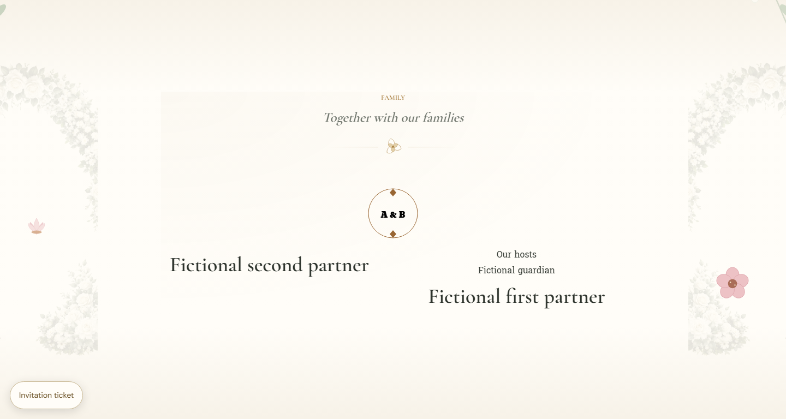
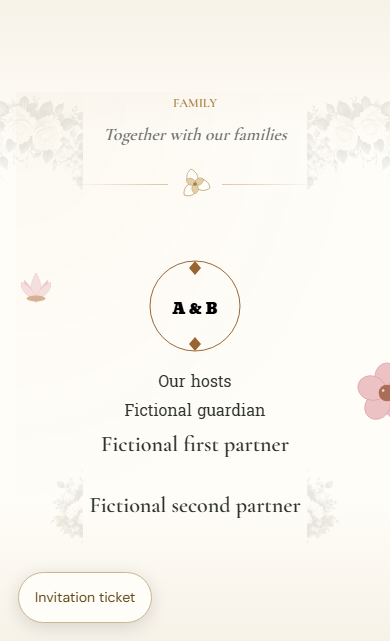
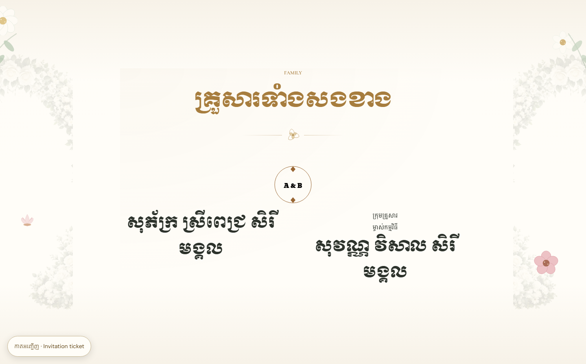
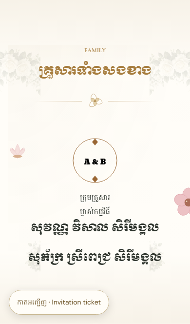
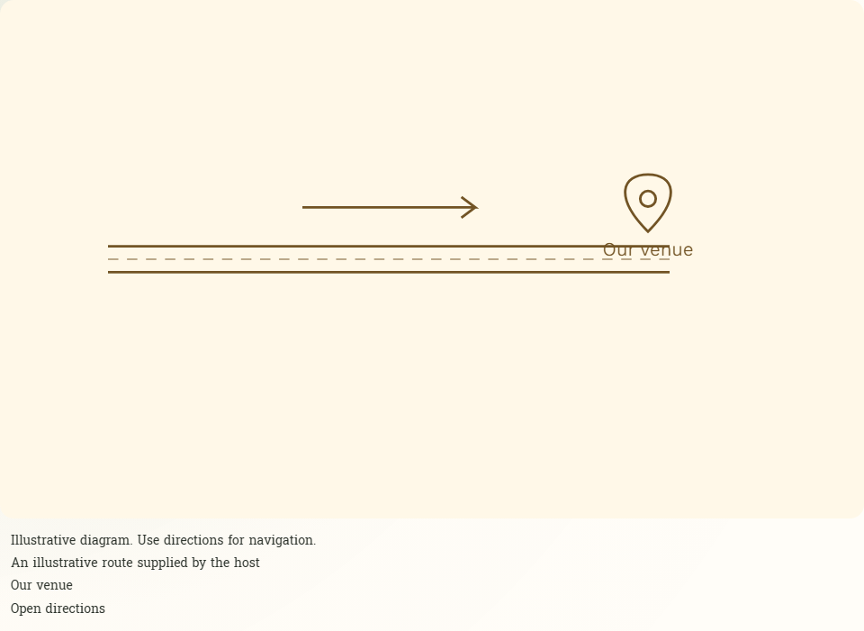
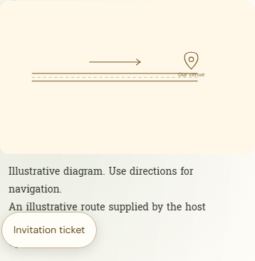
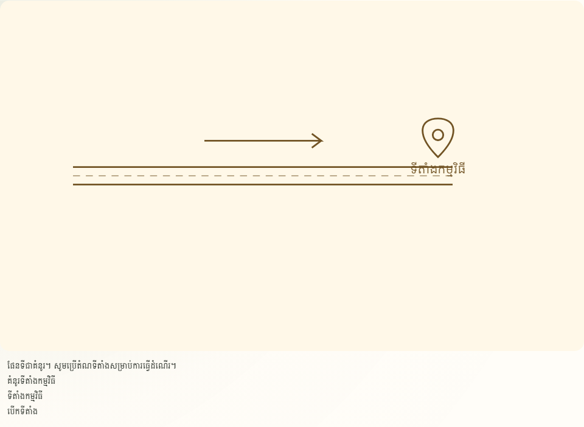
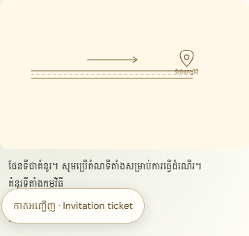
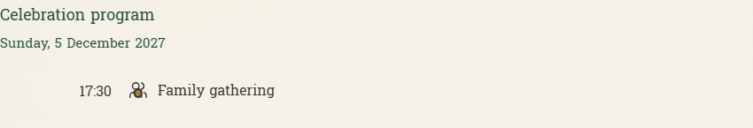
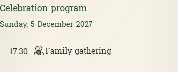
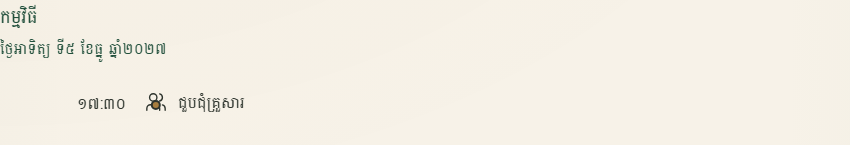
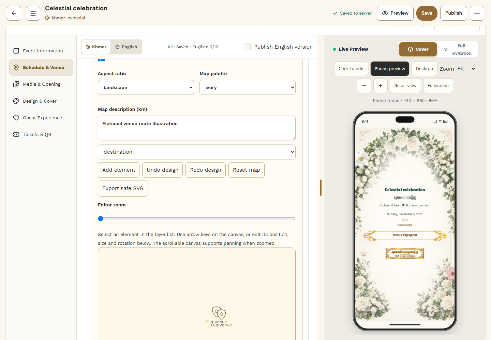
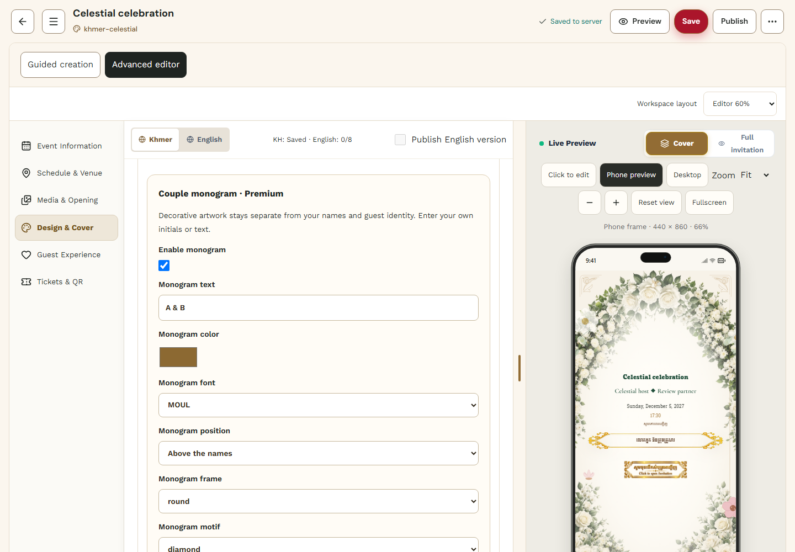